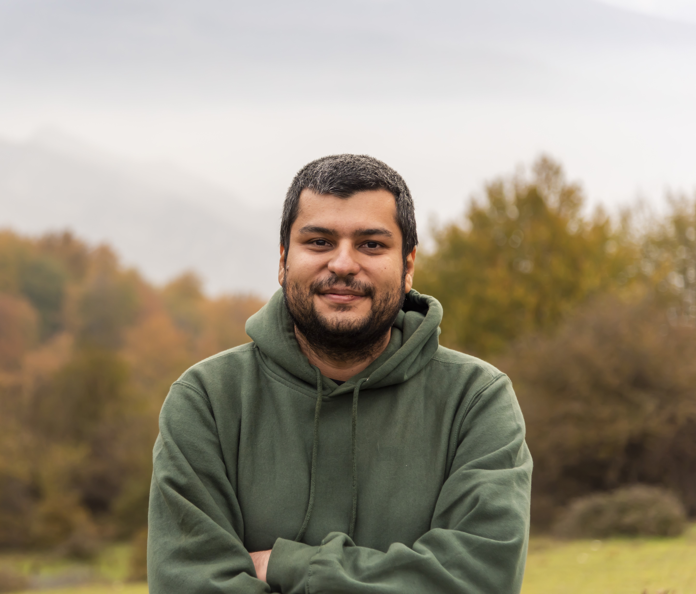

|  |
Ehsan Edalat
PhD Candidate and Lecturer |
Ehsan Edalat |
Many internet applications personalize their services to the interests of users. They indeed process the natural language words in the log of interactions of a user with the application and extract a user profile that in some way represents the concepts the user is interested in. The user profile, however, may naturally reflect the private interests of the user. Hence, the users urge the applications to preserve their privacy, even though they are interested in the personalization services as far as possible. To formulate such requirements, we work on a novel notion of privacy that is built on the differential privacy notion.
We present a method for detecting injection vulnerabilities in Android Apps with Concolic Execution and taint analysis. With static analysis, we extract desirable paths for detection analysis. With the idea of using Mock classes, we alleviate event-driven and path explosion challenges due to the Android framework. For the evaluation of our tool, we use ten self-designed and 140 F-Droid repository Apps. The overall result shows that 11 Apps are vulnerable to SQL injection.
In this work, we implement a tool for mobile forensics. With this tool, deleted information on sensitive mobile apps such as SMS, Emails, Browser bookmarks, and histories are retrieved. Additionally, our software supports deleted photos and files on internal storage. The primary approach of this work is three different methods of extracting deleted records from SQLite.
{kind=link}
{kind=link}
{kind=link}